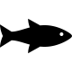
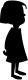

<link rel="stylesheet" href="{{ site.baseurl }}/common/css/font/HorrorScribbles/stylesheet.css">
<link rel="stylesheet" href="style.css">
<section class="intro">
	{% capture fish %}{% endcapture %}
	{% capture girl %}{% endcapture %}
	<p>I’m a <strong>mermaid</strong>,</p>
	<figure class="inner">
		<table>
			<tr>
				<th>Day</th>
				<th>Top</th>
				<th>Bottom</th>
			</tr>
			<tr>
				<td>Odd</td>
				<td>{{ fish }}</td>
				<td>{{ girl }}</td>
			</tr>
			<tr>
				<td>Even</td>
				<td>{{ girl }}</td>
				<td>{{ fish }}</td>
			</tr>
		</table>
		<figcaption>Figure 1: The Mermatrix.</figcaption>
	</figure>
</section>
<section class="location">
	<p>but only part-time.</p>
	<p>I guess there just aren’t a lot of full-time <strong>mermaid</strong> positions available in <a href="idaho.txt">Idaho</a>.</p>
	<figure class="wide">
		
		<figcaption>Figure 2: Idaho. Mermaid population: 1+.</figcaption>
	</figure>
</section>
<section class="seashell">
	<p>
		I struggle to fulfill the demands of my position in a landlocked state,
		but I scrape by on a room full of seashells and sand dollars.
	</p>
	<p>
		This is the only job I've known since my skin felt saltwater for the first time.
	</p>
</section>
<section class="seagod">
	<p>
		I am a <strong>mermaid</strong> who fought my creator, a sea god.
	</p>
	<p>
		A lesser god, never in love with the sea, but his temper was as turbulent as her storms,
		crushing little boats between heavy hands.
	</p>
	<p>
		Yet there is a difference. The <a href="{{ site.baseurl }}/ocean/">ocean</a> drowns all sailors just the same.
	</p>
	<p style="white-space: nowrap;">My father only ever hit me.</p>
	<canvas id="canvas"></canvas>
</section>
<section class="outro">
	<p>
		The land would not have me, the god of the sea would kill me,
		and I am drowning underneath the weight of both.</p>
</section>
<footer>
	<p>
		mangled from original text by
		<a href="https://adoenamedjane.tumblr.com/post/107474911867/the-part-time-mermaid" rel="author">Butter</a>
	</p>
</footer>
<!-- for requestAnimationFrame -->
<script src="{{ site.custom.polyfill_url }}"></script>
<script>
var body = document.getElementsByTagName('body')[0];
function getViewportWidth() {
	return window.innerWidth || document.documentElement.clientWidth || body.clientWidth;
}

var opts = {
	color: 'rgba(55, 19, 91, 0.97)',
	// Water as a collection of springs
	springCount: 400,
	// Spring stiffness; see Hooke's law
	springRate: 0.01,
	// How much springs resist change, higher numbers make molasses
	springDamping: 0.01,
	waveSpreadSpeed: 0.2,
	// 1 at the bottom, 0 at the top of the canvas
	waterLevel: 0.3,
	canvasHeight: 100,
	// How much to displace the springs when the water is disturbed
	disturbanceVelocity: 10,
	// Chance for a new disturbance every frame, in %
	disturbanceChance: 25,
};

var Spring = function() {
	this.p = 0;
	this.v = 0;
	this.update = function(springRate, springDamping) {
		this.v += -springRate * this.p - this.v * springDamping;
		this.p += this.v;
	};
};

var springs = [];
var springCount = opts.springCount;
while (springCount--) {
	springs.push(new Spring());
}

var canvas = document.getElementById('canvas');
var w = canvas.width;
var h = canvas.height = opts.canvasHeight;
var ctx = canvas.getContext('2d');
ctx.fillStyle = opts.color;

(function main() {
	var vw = getViewportWidth() + 20; // right padding
	if (canvas.width != vw) {
		// 100% viewport width
		canvas.width = w = vw;
		ctx.fillStyle = opts.color; // canvas state was reset, re-add color
	}

	var len = springs.length;
	if ((Math.random() * 100) < opts.disturbanceChance) {
		var s = springs[Math.floor(Math.random() * len)];
		if (s.v < opts.disturbanceVelocity) {
			s.v += opts.disturbanceVelocity;
		}
	}

	for (var i = 0; i < len; i++) {
		springs[i].update(opts.springRate, opts.springDamping);
	}

	var spread = opts.waveSpreadSpeed;
	var leftDeltas = [], rightDeltas = [];
	// Multiple passes where springs pull on their neighbors
	for (var j = 0; j < 8; j++) {
		for (i = 0; i < len; i++) {
			if (i > 0) {
				leftDeltas[i] = spread * (springs[i].p - springs[i - 1].p);
				springs[i - 1].v += leftDeltas[i];
			}
			if (i < len - 1) {
				rightDeltas[i] = spread * (springs[i].p - springs[i + 1].p);
				springs[i + 1].v += rightDeltas[i];
			}
		}

		for (i = 0; i < len; i++) {
			if (i > 0) {
				springs[i - 1].p += leftDeltas[i];
			}
			if (i < len - 1) {
				springs[i + 1].p += rightDeltas[i];
			}
		}
	}

	ctx.clearRect(0, 0, w, h);
	ctx.beginPath();
	ctx.moveTo(0, h);
	for (i = 0; i < len; i++) {
		ctx.lineTo(i * (w / len), h * opts.waterLevel + springs[i].p);
	}
	ctx.lineTo(w, h);
	ctx.fill();
	requestAnimationFrame(main);
})();
</script>
